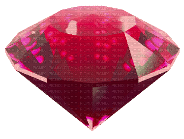
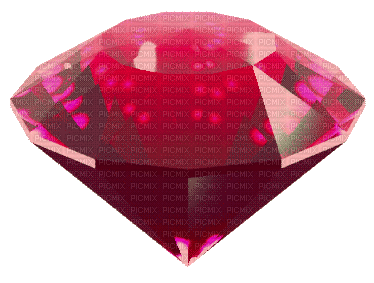
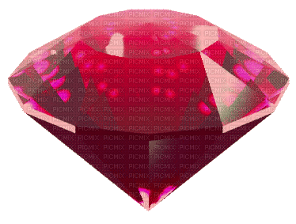
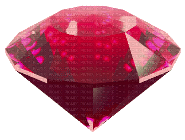
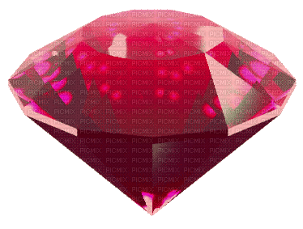

How The Internet Uses Nostalgia
Link to Original Article

TYPE + CODE PROJECT ONE
Websites by Jyot Kaur Thind
1
2
3
October 1st, 2024

 
 TYPE + CODE PROJECT ONE  TYPE + CODE PROJECT ONE
TYPE + CODE PROJECT ONE  TYPE + CODE PROJECT ONE